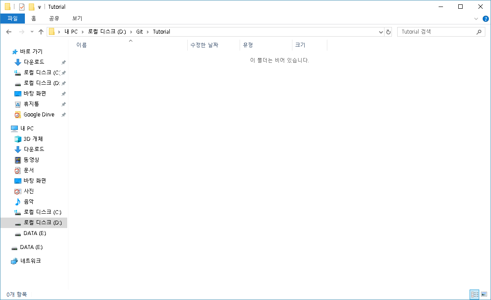

Remote
우선 뒤쪽 내용에서 만들었던 Repository는 Local Repository라고 한다.
이 곳에서 아무리 commit을 해도 Github에 만들어둔 Repository에는 올라가지 않는다.
그래서 Remote명령을 통해 Github같은 곳에 만든 Repository를 Local Repository와 연결하는 것이다.
Remote 명령을 사용
git init
git remote add [branch] [url]
원하는 폴더에서 git init을 통해 Local Repository를 생성한 후git remote add origin [url]로 연결하면 된다.
예)
git remote add origin https://github.com/mkachi/Tutorial

아까 생성하였던 README.md나 LICENSE파일이 보이지 않는 것은 아직 Repository를 연결해줬을 뿐이지 Github에 있는 Repository를 Checkout하지 않은 상태이다.
Pull & Checkout
git pull
git checkout [branch]
위와 같은 명령어를 통해 branch를 선택해 checkout 받을 수 있다.
[branch]에는 master를 적으면 된다.
master는 기본적으로 생성되는 branch이다.
이 명령들은 뒤의 내용에서 더 자세히 설명할 것이다.